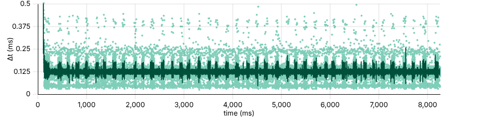
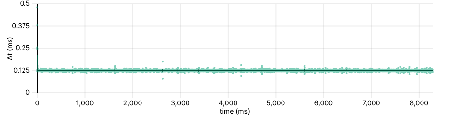
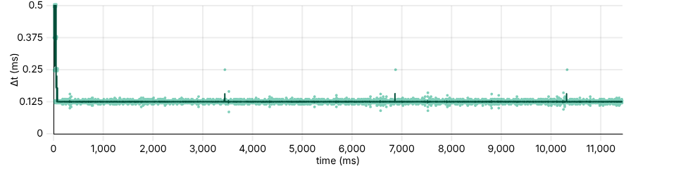

MousePlotter is a browser-based version of microe1's MouseTester. Both tools plot mouse report data, especially raw motion counts, against time.
Plot navigation: Double-click to reset. Middle-click and drag to pan. Left-click and drag to zoom, or scroll to zoom. Do these over an axis to reset/pan/zoom only that direction. Click on the legend to toggle traces.
Three useful workflows:
If the Δt plot looks fuzzy, like the example below, the most likely cause is timing jitter in the operating system's data pipeline.

To reduce jitter, many people report that disabling CPU C-states helps. Operating system tweaks may help as well, such as forcing maximum CPU clock speeds. The browser itself can also be a limiting factor. For best results, run MousePlotter fullscreen and begin recording only after the "To show your cursor" dialog has faded away. The standalone utilities below deliver the cleanest results.
Keep in mind mouse firmware cannot directly affect the timing of USB reports: that timing is dictated entirely by the USB host controller. Host controllers tend to behave very regularly, with negligible jitter, as long as bus activity is minimal. Therefore, jitter (except for dropped/skipped reports, which show up as jumps of 125 µs for 8 kHz mice) is caused entirely by operating system and CPU behavior.
If the CPU, operating system, and recording application are optimized sufficiently that timing jitter remains consistently less than about 50 µs, Δt plots can be used to detect mouse firmware glitches and dropped reports.
Ideally, under sufficient motion, firmware responds to every poll with a report. Here is an example of a mouse with perfectly behaving firmware on a system with low jitter.

Here is an example of a mouse with firmware that skips a report every 3.4 seconds roughly. Notice the blips, even in the smoothed Δt trace, around 3400, 6800, 10300 ms.

Browsers are ultimately not ideal for recording data with microsecond-level timing precision. For this reason, the GitHub repository includes minimal and optimized standalone utilities for both Linux and Windows. Use them to save a CSV for import here, or save an HTML with embedded data for instant viewing.
You can also use MouseTester itself: MousePlotter is fully compatible with MouseTester CSVs, and vice versa.
Many find that MouseTester works well in Windows PE. See BoringBoredom/WinPE for instructions.